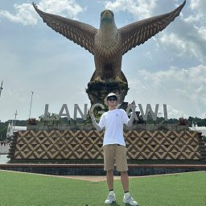

Pretraining & Foundation Models
Hy3.0 preview, HY2.0, Hunyuan-TurboS, Hunyuan-T1, Hunyuan-Large, MAP-Neo, OpenCoder, D-CPT Law, E2-LLM, DDK.

Senior Researcher, Tencent · Hunyuan Department
I am a core contributor to the Tencent Hunyuan model family. My research interests lie in foundation models and post-training, with a focus on reinforcement learning, agentic RL, code/reasoning models, math and STEM optimization, agentic web coding, multimodal systems, and data-centric model iteration.
Research
I am currently working on foundation models, especially code/reasoning models, reinforcement learning, agentic RL, math and STEM reasoning, multimodal systems, and agentic web coding.
Hy3.0 preview, HY2.0, Hunyuan-TurboS, Hunyuan-T1, Hunyuan-Large, MAP-Neo, OpenCoder, D-CPT Law, E2-LLM, DDK.
Math/STEM reasoning optimization, RL for code and reasoning models, reinforcement learning on pre-training data, critic-guided RL, agentic web coding, parallel thinking, and credit assignment.
Agentic coding evaluation, long-horizon repository generation, automatic benchmark generation, visual-to-code, code critique, artifact evaluation, and code LLM pretraining.
Math, code, tool-use, audio-visual, multimodal browsing, group identity evaluation, and survey resources.
Updates
Selected paper releases, conference updates, and open-source project milestones.
Three papers are accepted to ICML 2026: SWE-Compass, NL2Repo-Bench, and From Diagrams to Code.
Four papers are accepted to ACL 2026: CriticLean, RLPT, ReLook, and Rhombus.
Hy3.0 preview was open-sourced and reached #1 on OpenRouter's daily global API usage leaderboard.
Two papers are accepted to ICLR 2026: AutoCodeBench and OmniVideoBench.
Core contributor to the HY2.0 model family, including Think and Instruct variants for reasoning and instruction-following.
Core contributor to Hunyuan-TurboS; the technical report was released.
OpenCoder was accepted to ACL 2025.
Core contributor to Hunyuan-T1, a reasoning-focused Hunyuan model.
MTU-Bench was accepted to ICLR 2025.
Core contributor to Hunyuan-Large; model weights and technical report were released.
Two papers are accepted to ACL 2024: E2-LLM and ConceptMath.
Selected Work
A curated list of representative work.
Open-source Hunyuan 3.0 preview model for reasoning, coding, and agentic workflows.
Next-generation Hunyuan model family for reasoning and instruction-following scenarios.
Open-source MoE LLM with long-context support.
Automated multimodal evaluation for interactive visual artifacts.
Survey and resource hub for reinforcement learning credit assignment in LLMs and agents.
Background
Research and engineering roles across large-scale language model systems.
Hunyuan Department · Senior Researcher
Algorithm Engineer
Algorithm Engineer Intern
Algorithm Engineer Intern
 Tencent
Tencent